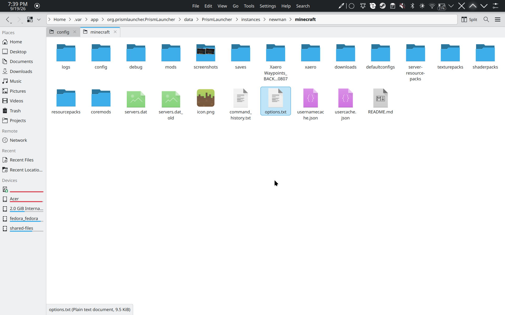

Update Instructions
-
First, install the new Newman2.zip using Prism Launcher as a new instance. Check the installation guide if you need help!
-
Right-click your old instance and select Folder to open its directory.

-
Open the
.minecraftfolder. Youroptions.txtfile is located directly in the root of this.minecraftinstance folder! Copy this file so you don't lose your keybinds and settings!
-
Also inside the
.minecraftfolder, copy yoursaves,resourcepacks, andschematicsfolders if you have them.
-
Now, open the folder for your new Newman2 instance, go into its
.minecraftfolder, and paste the copied files! Replace any existing files when prompted. -
You're all set! Enjoy the fresh updates! 🎉